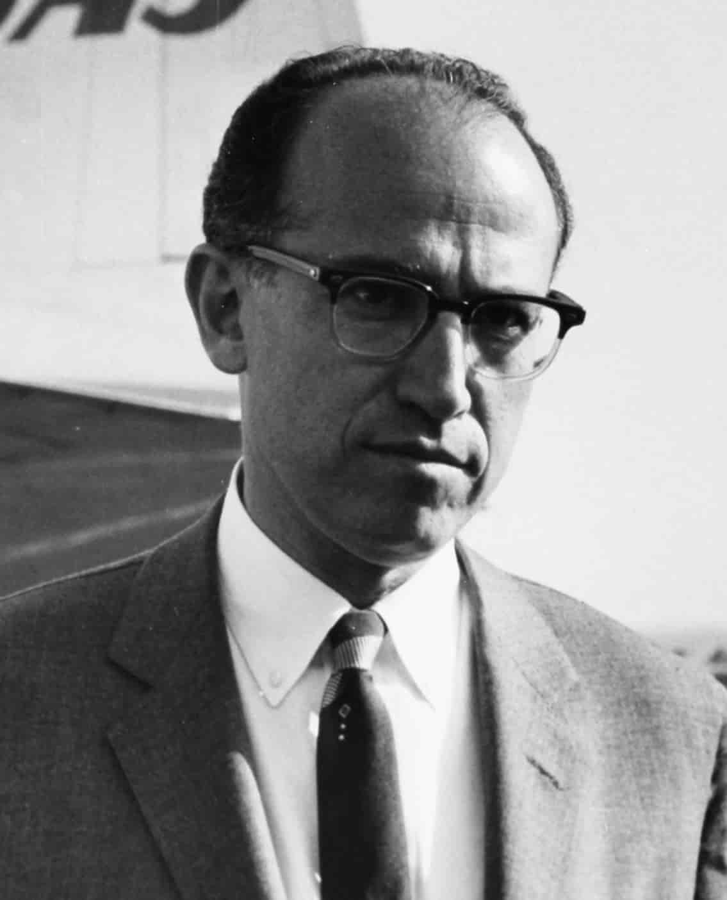
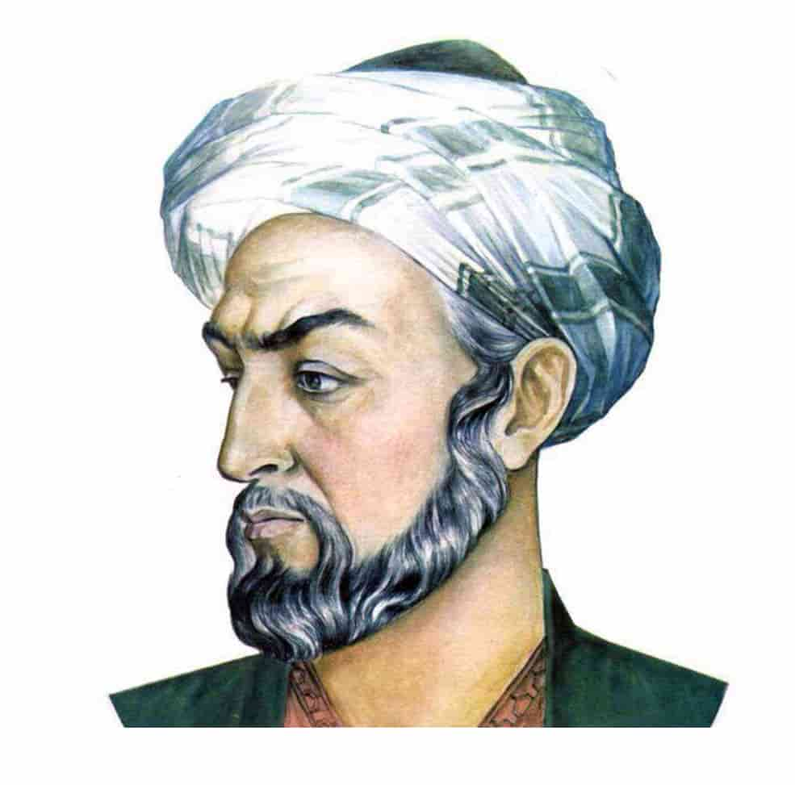

At SLA, students come first and are taught by some of the best tutors in Britian.
We take our teaching very seriously - striving for every lesson taught to be fun, informative and thorough. We aim to teach each student holistically in small class sizes or in 1:1 sessions, addressing every aspect of our students' education.
With us students learn how to organise their studies and learn ‘how to learn’ first . They are encouraged at all times to question and understand concepts as opposed to memorise mindlessly. This will help with the long-term retention of the topics and encourage the student to pursue the topic more vigorously.
All of our students are taught the application of knowledge through regular testing. By providing detailed feedback to students, problem areas are addressed. There are a huge supply of resources and access to past question papers that allows students to practise.
We intend to teach each of our students a wide range of high-level revision techniques such as time management, mind mapping and summary sheet organisation. This will pave the way for them to achieve their full potential in the external examinations, as well as equipping them with essential skills for the future - inline with our vision at SLA.
It is a well known fact that Education in the UK is unparalleled and that certifications from the UK are likely to be accepted by all institutions around the world.

With this fact established, I have a vision! At SLA, I want to be able to provide British education to as many willing students as possible in as many corners of the world as possible. With the available technology, pupils do not need to move away from the warmth of their family & friends and the familiarity of their native country. Parents need not spend a great deal of money and families need not split in order to give their children the best start in life.
COVID-19 has changed the way we operate and the way we approach things in life. This includes the education of our children. There are many students who are vulnerable and in the risk group. There are students who live with a member of the family who is at high risk. For these students, going back to school is a risk to life and it is unfair to put pupils at such a crossroad without providing an alternative.
We are that alternative. We provide full A level and re-take GCSEs online with minimum contact for the science practicals, all while ensuring the highest quality of education for students.
With this in mind, I have got together under one 'cyber roof' some of the best tutors UK has to offer. Our tutors have the experience and the know-how to help each and every individual student succeed.
We instill confidence and knowledge and help students pave the path to future careers.
The Salk - Liori - Avicenna Institute
Salk:
Professor Salk was inspirational to his students and a whole generation of scientists and potential scientists. His genius, vision and talent saw the first vaccine for Polio to be developed, tested and implemented worldwide. This put a stop to one of the biggest killers the world had seen. We thought it was appropriate for an educational institute starting in 2020 with the Coronavirus pandemic raging around us to have the name of a brilliant scientist that successfully combatted a comparably dangerous virus. May this bring inspiration to our students so that they realise all obstacles are surmountable with perseverance, effort and hard work.
Jonas Edward Salk (28 October 1914-23 June 1995) was an American medic who decided to become a virologist and medical researcher instead of a physician. After initially working on flu virus, he started research on different variants of poliovirus from 1948. For the next 7 years he and his team devoted their efforts into developing a vaccine for polio. The field trial for the vaccine he developed was arguably one of the most extensive and elaborate processes undertaken globally. It involved 20,000 experts including physicians, 64,000 school personnel and 220,000 volunteers. Ultimately, 1.8 million schoolchildren took part in the global trial. Before the introduction of the vaccine in 1955, polio was feared as much as the atomic bomb. Post world wars, polio raged, killing thousands of people and paralysing many others. In 1949, polio killed thousands but also left 1 in 1,000 children who had contracted it with paralysis. Although it killed fewer than the flu pandemic of 1918, its psychological effect, seeing so many children paralysed was profound. Even though there were no lockdowns, people sensibly avoided public places and isolated themselves as much as was possible. World travel was very limited and the spread of the disease was limited. At this time, “iron lungs” were invented to help prevent asphyxiation of the polio patients and this was considered revolutionary method of treatment which reduced death rates markedly.
In the midst of all this, Salk and his team were busy trying to find an effective vaccine against the virus. Despite being funded privately, Salk decided not to patent the vaccine and not to seek profit in order to ease its global use. He was hailed as a miracle worker. In 1963 Salk founded the Salk Institute for Biological Studies in La Jolla California which is currently a centre for medical & scientific research.
Salk considered vaccination of children against diseases a “moral obligation” of parents and society. Since there is no known cure for any virus to date, vaccine seems the only defence against it. There are many parallels to the present day. Only that with the level of technology of today, we hope, it will not take 7 years to develop an effective vaccine against Coronavirus.
Liori:
Liori (pronounced Li-ori) means “I have light” or “I have God gift of Light”. We believe education is about showing the way to success to students so that they can achieve their fullest potential. This involves lighting up their path and smoothing the potholes along the way. It was chosen as part of our name because we feel we are able to light up the ‘educational path’ of the students who pass our cyber door all the way to success in the exams and entry to university. We mean to show every student who studies with us the way to reach their potential and the way to achieve professional fulfilment.
Avicenna:
Avicenna (980-1037) was chosen because he was inspirational to centuries of scientists in the world and is respected and revered even today as a prominent scholar of his time in par with Aristotle and Galan. Avicenna (also known as Ibn Sina) has been recognised by both East & West, as one of the great figures in intellectual history. He was an all-round scientist delving in Psychology, Astronomy, Philosophy, Metaphysics, Physics, Chemistry and Medicine. Avicenna refers to several ethical subjects which can be characterised into three main areas of considering patient interests, communication skills, and adhering to the characteristics of professional excellence. All this is of course makes him an excellent inspirational figure for our students.
Avicenna, a physician from the age of 18, experimented with remedies from Persia, Greece and India to treat his patients often without asking for payment. He has written about diseases, insomnia, dementia, epilepsy amongst others and corrected Aristotle in the perception that light emanates from the mind through the eyes. He correctly showed that light first enters the eyes from the outside. The translation of his five volume encyclopaedia called Cannon of Medicine into Latin was used by Europeans as a standard textbook up until 1800. In Chemistry, he used steam distillation to produce plant oils such as rose essence which he used for aromatherapy remedies. In Mechanics, he made a distinction between the inclination (tendency to motion) and force of a projectile, and concluded that motion was a result of an inclination transferred to the projectile by the thrower, and that projectile motion in a vacuum would not cease. Avicennian logic also influenced several early European logicians such as Magnus and Ockham. Around the 1000 AD, Avicenna was considered as a replacement of Aristotle as the all-round scientist, scholar and philosopher of his time. His ideas on ethics are as valid and appropriate today as they were in 11th century.
Avicenna spent his life in pursuit of knowledge and when his friends asked him to slow down for his health, he famously replied “I prefer a short life with width to a narrow one with length”. He died in June 1037, in his fifty-six year, in the month of Ramadan and was buried in Hamadan, Iran. In 1980, the then Soviet Union which ruled his birthplace Bukhara, celebrated the thousandth anniversary of Avicenna's birth.